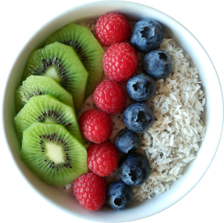

Overnight Oats con Frutas
Tiempo de preparación: 10 minutos + 8 horas de refrigeración
Porciones: 2
Ingredientes:
- 1 taza de avena integral
- 1 taza de leche de almendras (o la leche de tu preferencia)
- 2 cucharadas de yogur griego natural
- 2 cucharadas de semillas de chía
- 1 cucharada de miel o sirope de agave
- 1/2 cucharadita de extracto de vainilla
- 1/4 de taza de arándanos frescos
- 1/4 de taza de frambuesas frescas
- 1 kiwi, pelado y en rodajas
- 2 cucharadas de almendras laminadas
Instrucciones:
- En un tazón grande, mezcla la avena, la leche de almendras, el yogur griego, las semillas de chía, la miel y el extracto de vainilla.
- Divide la mezcla en dos frascos de vidrio o recipientes herméticos.
- Tapa los recipientes y refrigera durante la noche o por al menos 8 horas.
- A la mañana siguiente, saca los overnight oats de la nevera.
- Agrega los arándanos, las frambuesas y las rodajas de kiwi sobre la avena.
- Espolvorea las almendras laminadas por encima.
- Si lo deseas, puedes agregar un poco más de leche si prefieres una consistencia más líquida.
- Disfruta de tus overnight oats con frutas frescas inmediatamente.
Información Nutricional (por porción):
Calorías: 340
Proteínas: 12g
Carbohidratos: 50g
Grasas: 12g
Fibra: 10g